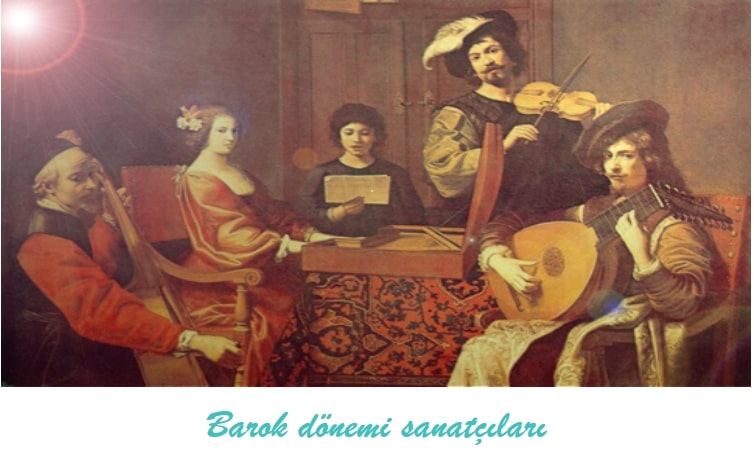
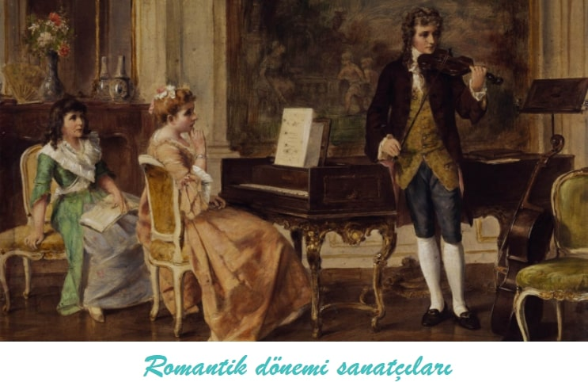

2011'de yapılan bir araştırmaya göre Türkiye'de yaşayan insanların %92,3'lük kısmı klasik müzik dinlemiyor.Bu oran bize gösteriyor ki klasik müzik Türkiye'de pek tutulan bir müzik değil. İnsanların neden klasik müzik dinlemediğiyse kafamı karıştırmakta...Belki de kültürümüze uymuyordur.Bu nedendendir ki Türkiye'de klasik müzik konserleri pek yapılmamakta. Aslında klasik müzik çok güzeldir.İnsanı eski anılarına götürür.Kaybettiği insanları hatırlatır.Ruhunda kıpırdanmalar yaratır ve insanı o an ki yaşadığı sıkıntılardan bir nebze olsa bile çıkarır ve insanın duyguları olduğu aklına gelir. O yapmacık Dünya gözünün önünden geçer ve o an insanda büyük bir pişmanlık oluşur.Neden böyle oldum diye düşünmeye başlar oysaki onu bu duruma düşüren şey insanlığın ta kendisidir.
Lütfen duygularınızı unutmayın!! Ruhunuzun onlara ihtiyacı var.Eğer böyle ruha dokunan müziklerden arıyorsanız Farid Farjad'ı dinlemenizi şiddetle öneririm.
Rönesans döneminde Kilise'nin sanat üzerindeki etkisi zayıflamıştır, besteciler ve müzisyenler yeni sanatsal fikirlere hazırdır. Özellikle Flaman besteciler ve müzisyenler, İtalyan saraylarında eğitim vermek ve icra etmek için görevler almışlardır. Matbaanın icadı ile metotlar ve şarkı kitaplarının basımı yaygınlaşmış ayrıca burjuva sınıfının yükselişiyle birlikte, hem eğitsel hem de amatörler için eğlence olarak müziğe olan talep artmıştır.
Rönesans Dönemi Müziğinin Genel Özellikleri;
Müzikte çok önemli bir çağın tanımında kullanılan bu küçümseyici sıfatlar, Barok'un genel anlamından bizi uzaklaştırır. Barok, en kısa tanımıyla saray sanatıdır. Beğeni düzeyi de doğal olarak soylular sınıfının (aristokrasinin) süslemeye yakınlık duyan incelikli anlayışını yansıtır. Barok sözcüğü bugün anlaşıldığı anlamda, müzik tarihinde bir dönemi adlandırmak için ancak 19. yüzyılın sonlarına doğru kullanılmaya başlanmıştır.
Barok müziğin en önemli kurallarından biri vokal ve çalgısal güçlerin birleştiği ve karşı karşıya geldiği concertato stilidir. Bu stilin kaynağı, Andrea Gabreli ve Giovanni Gabreli’nin polikoral motetleri ve Lodovico Grossi da Viadana (c. 1560-1627) gibi 17. yüzyıl başlarında yaşamış bestecilerin sürekli bas tekniğini geliştirmelerine dayanır.
Sürekli bas (Basso Continuo) barok dönemde ortaya çıkmış olan, genellikle bir klavyeli ve telli çalgı ile müziğin bas çizgisinde -ince ses aralığındaki ezgiye karşı- çalınan bir eşlik etme tarzıdır. Genellikle bir viyolonsel ya da fagot bas partisini çalarken bir klavsen, lut, ve bazen bir orgun bu bas partisi üzerine kısmen doğaçtan armonizasyon yaptığı, müzikteki armoni boşluklarını doldurarak zenginleştirdiği bir müzik yapma yöntemdir.
Ortaya çıkışı, Rönesans çok sesliliğinin dokusal homojenliğine karşı ince sesin üstünlüğünü ilan eden devrimin (c. 1600) akla yatkın bir gelişmesi olarak açıklanabilir. Çok sesli müziğin armonik temeli şimdi tam anlamıyla bir çalgıcının iki eli arasındadır. Hem dinsel hem de dünyasal müziğin yan etkileri Agostino Agazzari'yi (1578-1640), 1607 gibi erken bir tarihte bir kılavuz kitap yayınlamaya yönlendirdi; Del Sonare sopra'l basso con tutti l’stromenti (Tüm Çalgılarla Birlikte Bas Partisi Çalma Üzerine).
Barok stilin Rönesans stilinden farkı, daha süslü bir anlatıma sahip olmasıdır. Dönemin en ünlü çalgısı klavsendir. Klavsen neredeyse her müzik çeşidinde kullanılıyordu (çoğu zaman eşlik etmek amacıyla da olsa bkz. sürekli bas). Dönemde vokal müziğin yanı sıra çalgısal müzik de gelişmiştir; sonat, konçerto grosso, solo konçerto ve süit, bu dönemin yaygın çalgısal müzik türleridir.
Barok müzik dönemi müzikteki başlıca büyük yeniliği 'fonksiyonel tonalite'nin (Majör ve minör kavramı) geliştirilmesindedir . Bu dönemdeki besteciler ve çalgıcılar çok daha ayrıntılı ve incelikli ezgisel ve ritimsel süsler uygulamaya başlamışlar; müzikal notasyon şeklini değişmiş ve çalgıları yeni teknikler kullanarak çalmaya başlamışlardır. Barok müziği döneminde çalgılarla müzik icra edilmesinin ebadı, kapsam genişliği ve karmaşıklığı artmıştır. Barok müzik dönemi opera görsel sanatının kurulup, geliştirilip ve yaygınlaştırılması dönemidir. Bugün kullanılan müzik terimleri ve kavramlarının çoğunluğu İtalya'da, barok müzik dönemde ortaya çıkmış ve hala yaygın olarak kullanılmaktadır. Dönemin en ünlü bestecisi Johann Sebastian Bach'dır.
Dünya'da büyük bir üne sahip olan Vivaldi'de Barok dönemi sanatçılarındandır.Vivaldi konçertonun babası olarak bilinir.En çok tanınan eseri Dört Mevsim'dir.
Antoine Vivaldi'nin tanınan eseri olan Dört Mevsim'in Ilkbahar'ı(Spring) →Klasik stilin Barok stilden farkı, Klasik stildeki eserlerin Barok stildeki eserlerden daha sade olmasıdır. Barok dönemin kapanmasına yol açan etkenlerden biri de piyanonun icadıdır. Klasik dönemde her orkestrada klavyeli çalgı bulundurma zorunluluğu kalkmış, piyano orkestraya katıldığı zaman da mutlaka solist görevi görür olmuştur. Dönemi seçkinleştiren bir başka şeyse senfoninin yaygınlaşmasıdır. Dönemin en ünlü bestecisi Wolfgang Amadeus Mozart'dır.
Romantik dönem Klasik Müziğin benim için zirvesinin yaşandığı dönemdir.Bu dönem müziğin kilise ve saray egemenliği altından çıkıp halka yayıldığı,
kalıpların ve düzenin yıkılıp yerine daha özgür olan romantizmin geldiği dönemdir.
Kendi içinde 3 döneme ayrılır:

Bu dönemde oldukça fazla klasik müzik sanatçısı vardır. Bunun sebebi müziğin egemenliğini halkın almasıdır.
Romantik dönemin ünlü sanatçılarından biri de Erik Satie'dir. Satie'nin birbirinden güzel eserleri vardır.Bunlardan en çok beğendiğim bestesi Gnossienne No.1'dir.
Modern dönem içerisinde Romantizmi sürdürenler (Richard Strauss, Gustav Mahler, Sergey Rahmaninov, Edward Elgar) olduğu gibi müziğin genel kimliğini değiştiren asıl Modern besteciler (Claude Debussy, Maurice Ravel, Bela Bartok, İgor Stravinski, Dimitri Şostakoviç, Sergey Sergeviç Prokofyev) kendilerine has bir stil geliştirmiri Alban Berg ile Aşlerdir.George Gershwin klasik müzikle cazı birleştiren besteciler arasında en ünlüsüdür. Edgard Varèse, elektronik müzik akımını başlatmıştır. Arnold Schönberg ve öğrenci lenton Webern atonal müzik akımının yaratıcısı ve ilerleticisi olmuşlardır.Carl Orff , ilkel çağların müzikleri ve metinlerini yeniden canlandırıp modernize etmiştir. Ayrıca Türkiye'de çok sesli müziğin başlaması da bu döneme rastlar (Cemal Reşit Rey, Ahmet Adnan Saygun, Necil Kazım Akses). Günümüzde Krzysztof Penderecki, Arvo Pärt, Peter Machajdík gibi besteciler de modern dönemi sürdürmektedirler. Ayrıca hâla Amerika'da yaşayan İranlı Farid Farjad'da dönemin ileri gelen sanatçılarındandır.Benim en sevdiğim sanatçılar arasındadır.Bana kalsa Farid Farjad'ı listenin 1. sırasına koyardım da ilk 3'te gerçekten klasikleşmiş isimler var onları ilk 3'e yazmazsak ayıp etmiş oluruz.Başlangıçta çalan şarkı da Farid Farjad'ındır.
Fazıl Say'da klasik müzik modern dönemin sanatçılarındandır.Kendisi dönemimizin müzik dahilerinin arasındadır.Fazıl Say Dünya'da büyük bir üne sahiptir.Ne yazik ki Türkiye'de bir popçu kadar üne sahip değildir.Aşağıda kızı için yazdığı Kumru Ballad'ı paylaştım.
Evengy Grinko'nun kalbe dokunan eseri Valse →| Dünya'da en çok dinlenilen 10 klasik müzik sanatçısı(2019) | |
|---|---|
| 1 | Ludwig van Beethoven |
| 2 | Wolfgang Amadeus Mozart |
| 3 | Johann Sebastian Bach |
| 4 | Johannes Brahms |
| 5 | Franz Schubert |
| 6 | Pyotr İlyiç Çaykovski |
| 7 | Robert Schumann |
| 8 | Joseph Haydn |
| 9 | Frédéric Chopin |
| 10 | Felix Mendelssohn |
|
Bana göre en iyi 10 klasik müzik sanatçısı |
|
|---|---|
| 1 | |
| 2 | |
| 3 | |
| 4 | |
| 5 |
Frédéric Chopin |
| 6 |
Erik Satie |
| 7 |
Antonio Vivaldi |
| 8 |
Johannes Brahms |
| 9 |
Joseph Haydn |
| 10 |
Fazıl Say |
Görüs ve istekleriniz bize tıklayarak iletebilirsiniz
tıklayarak iletebilirsiniz
Bu bir proje ödevidir.Kural olarak bu proje ödevinde yalnızca html kullanılmıstır.